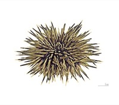

うに（雲丹）の漁獲量 都道府県ランキング
1位から3位までと、とれた量
うにが日本でいちばん多くとれるのは北海道です。3,861 tで、全国（6,262 t）の62%を占めます。

| 順位 | 都道府県 | 漁獲量 | 全国に占める割合 |
|---|---|---|---|
| 1位 | 北海道 | 3,861 t | 62% |
| 2位 | 岩手県 | 667 t | 11% |
| 3位 | 宮城県 | 475 t | 7.6% |
この数字について
- 分類：雲丹の仲間
- 全国の漁獲量：6,262 t
- この数字が表すもの：漁獲量（海でとった重さ。養殖は含みません）
- 調査：海面漁業生産統計調査（海面漁業） 令和6年
- 23県分を調査（調査していない県は順位に入りません）
うにの漁獲量について、よくある質問
- うにの漁獲量が日本一の都道府県はどこですか？
- 北海道です。海面漁業生産統計調査（海面漁業）（令和6年）で3,861 tでした。
- うにの漁獲量ランキング2位・3位はどこですか？
- 2位は岩手県（667 t）、3位は宮城県（475 t）です。
- うにの全国の漁獲量はどれくらいですか？
- 6,262 t（令和6年）です。